Old Pigeon
Una app de realidad aumentada que convierte cualquier recorrido en una experiencia: apuntas la cámara a un edificio y descubres su historia, su arquitectura y sus curiosidades.
Rol
Diseñador UX/UI
Tipo
Proyecto académico con revisión docente
Duración
5 semanas
Métodos
Benchmark, personas, card sorting, partitura de interacción
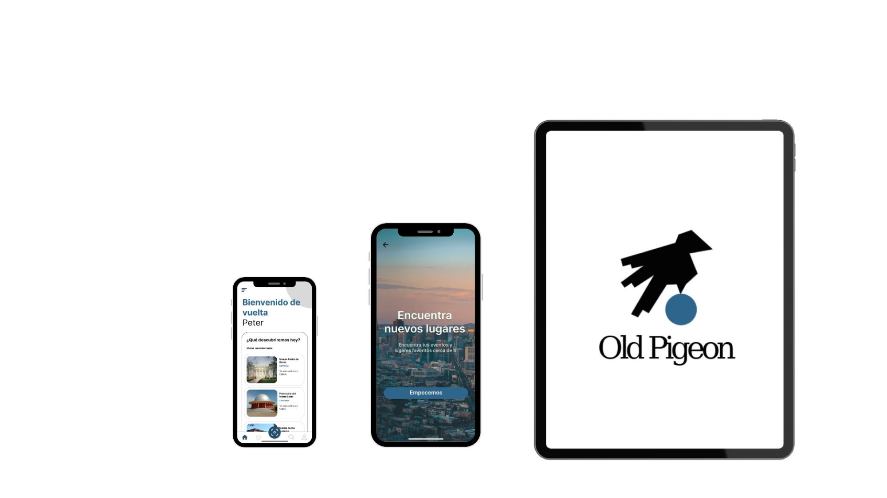
(01) Problema
El punto de partida
Al explorar una ciudad nueva cuesta acceder rápido a información histórica y arquitectónica confiable. Viajeros y profesionales del diseño buscan más que imágenes: quieren contexto, historia y datos precisos sin depender de guías turísticas ni de largas búsquedas en internet.
(02) Benchmark
Qué hay en el mercado
Se analizaron aplicaciones similares para entender el posicionamiento de Old Pigeon y mejorar su propuesta de valor, evaluando accesibilidad, experiencia de usuario y calidad de la información.
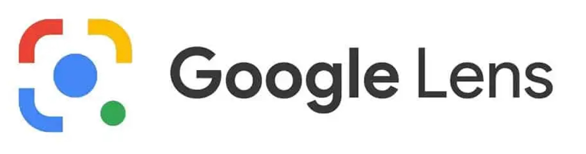
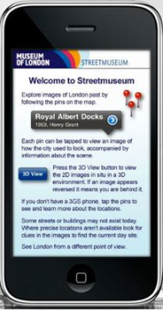
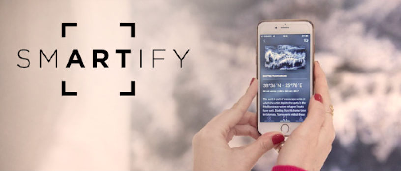
(03) Definición de usuario
Un viajero curioso
Los perfiles se basaron en entrevistas y pruebas de usabilidad. El usuario es un viajero moderno, apasionado por conocer el mundo a fondo: busca más que una foto, quiere historias, datos y contexto que enriquezcan su viaje.
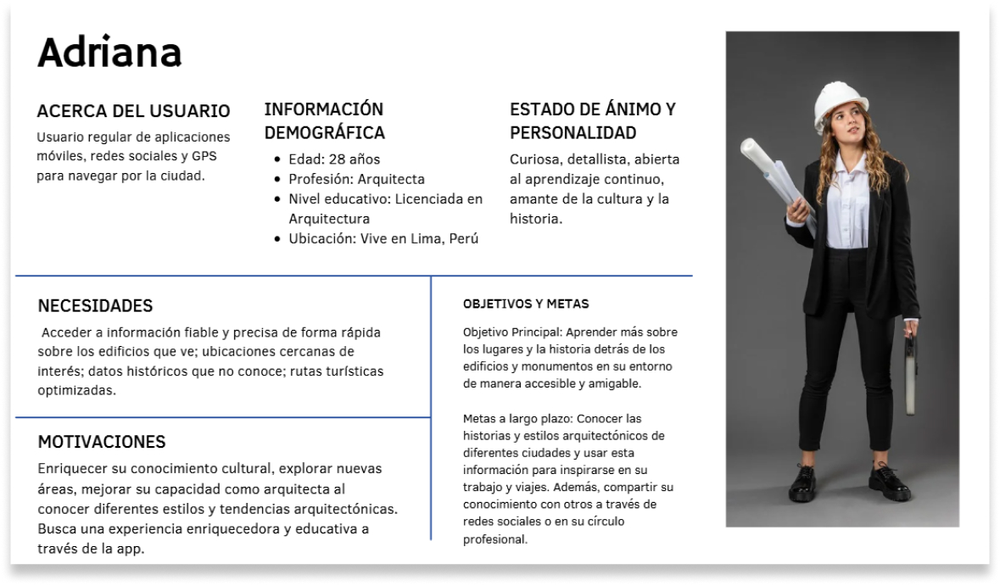
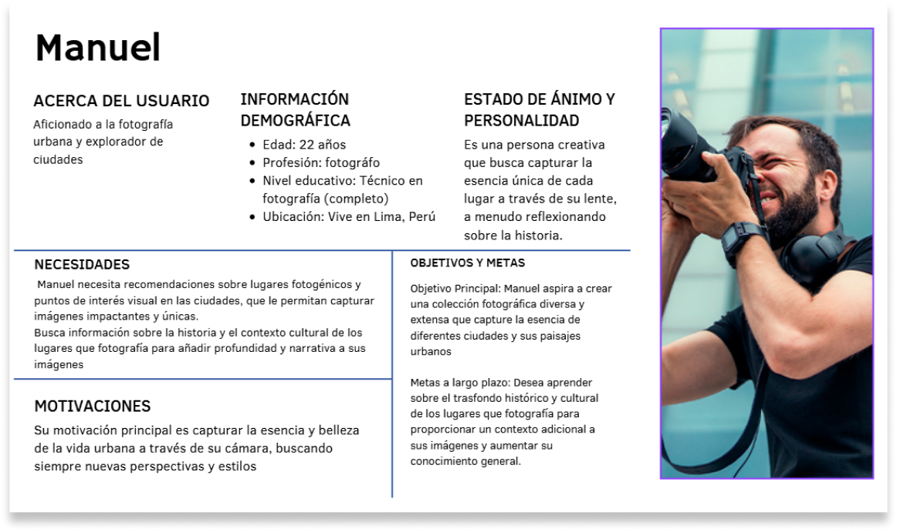
(04) Card sorting y sitemap
Cómo agrupan la información
Con card sorting se entendió cómo los usuarios agrupan y priorizan la información dentro de la app; ese orden se tradujo en el sitemap.
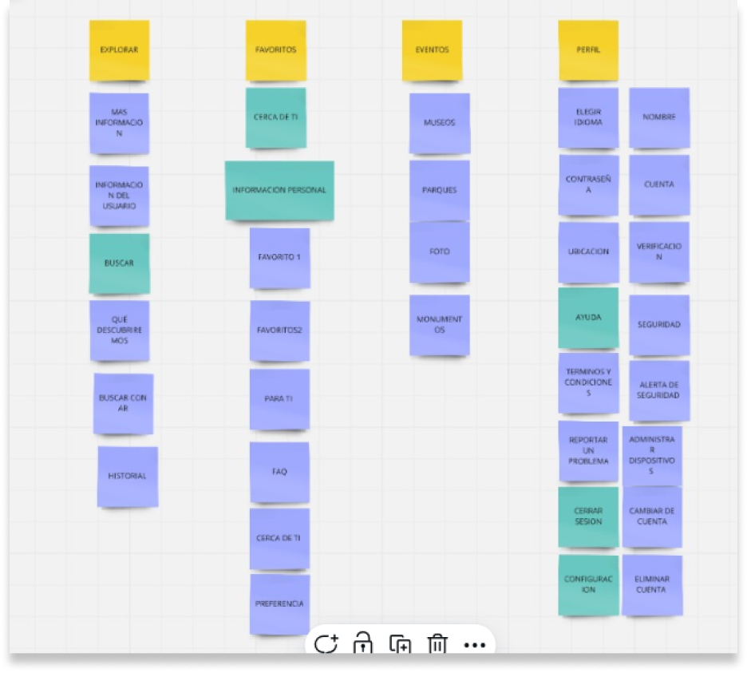
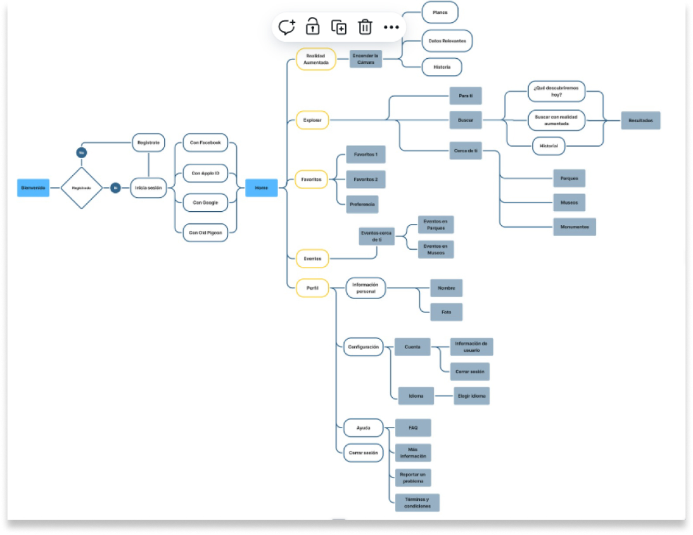
(05) Wireframes y pruebas
Probar antes de diseñar
Los wireframes de baja fidelidad definieron la estructura y el flujo. Con la técnica de partitura de interacción se observó cómo los usuarios recorrían la app.
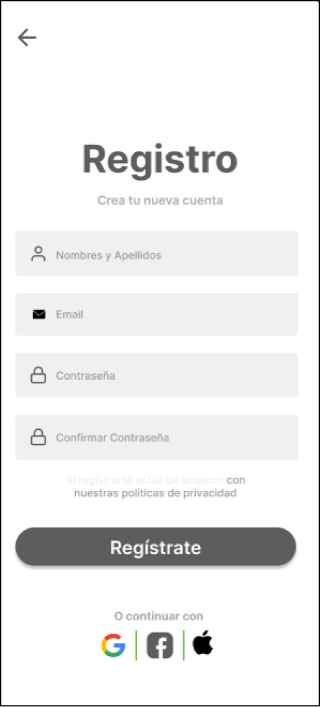
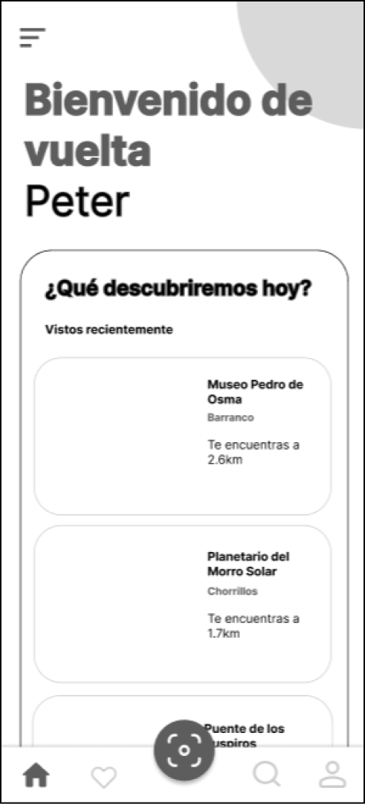
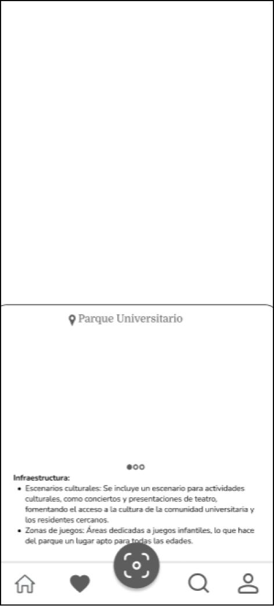
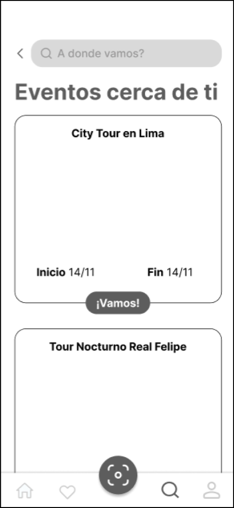
01
Encontrar en qué dispositivos funciona la app
Participante 1 · 26 años, turista. Tiempo estimado: 2 min. Completó la tarea sin inconvenientes en 1:13 min.
02
Ubicar el Parque Universitario
Participante 2 · 24 años, fotógrafo. Tiempo estimado: 2 min. Tuvo dificultades porque el buscador no estaba habilitado, pero completó la tarea en 1:42 min.
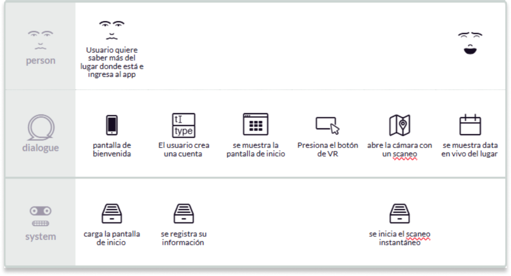
Conclusión de la prueba
La navegación resultó relativamente intuitiva, pero la estructura de menús y el acceso a funciones secundarias necesitaban mejoras.
(06) Alta fidelidad
Lo que cambió después de las pruebas
01
Menú reorganizado
La información se reordenó para facilitar la búsqueda de puntos de interés.
02
Buscador visible
Se habilitó y se destacó su acceso en la pantalla principal, el punto que frenó a un participante.
03
Jerarquía visual
Una distribución más clara de los elementos para una lectura más intuitiva.
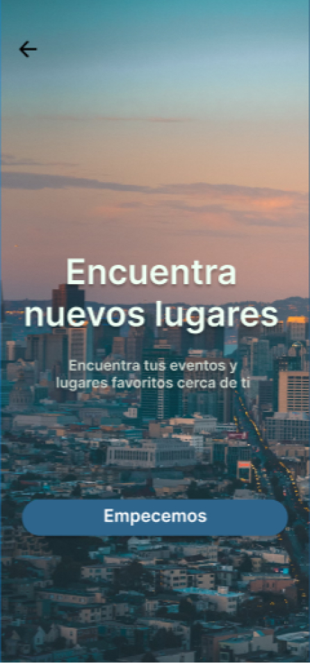
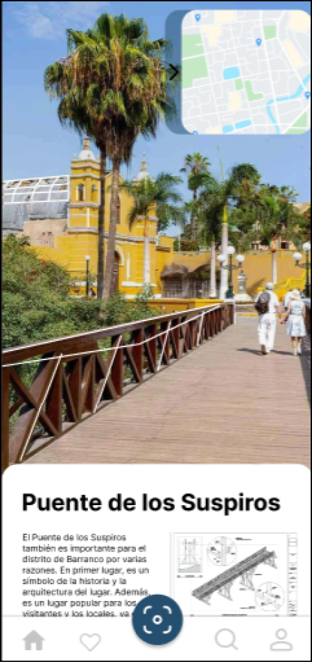
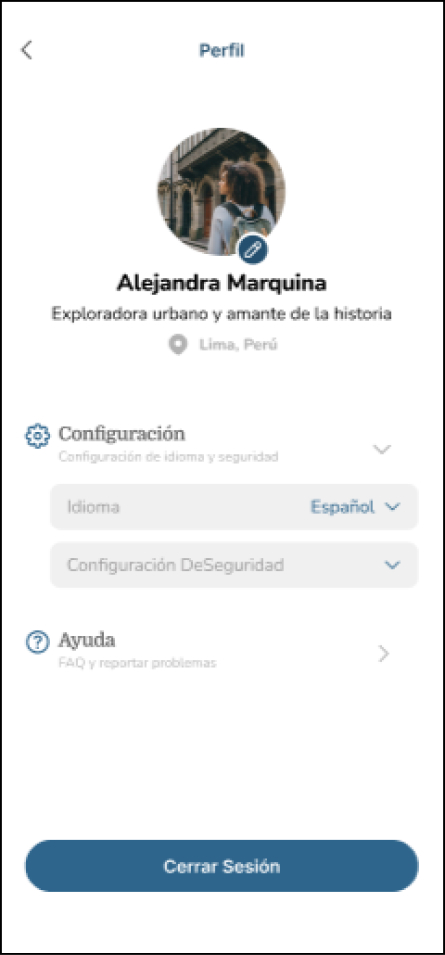
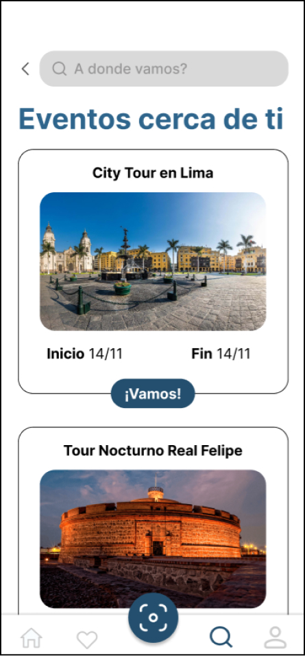
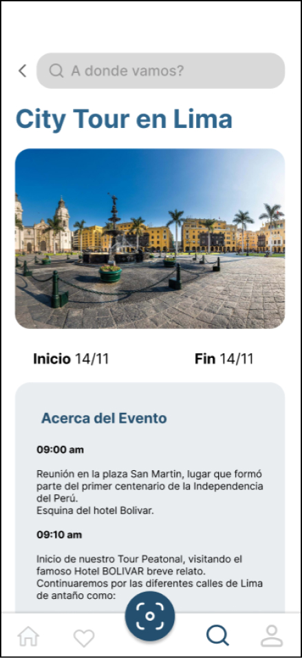
(07) Aprendizajes
Una interfaz bien estructurada y fácil de navegar puede valer más que una apariencia impactante.
El proceso reafirmó la importancia de diseñar con base en el usuario y de validar las decisiones con pruebas reales antes de avanzar a las etapas finales.